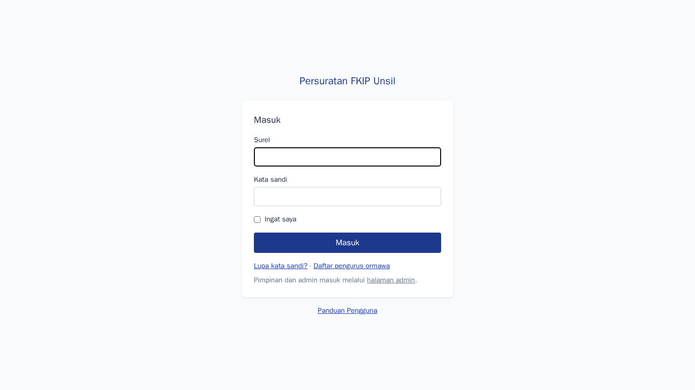
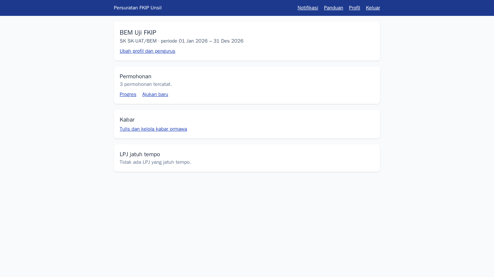
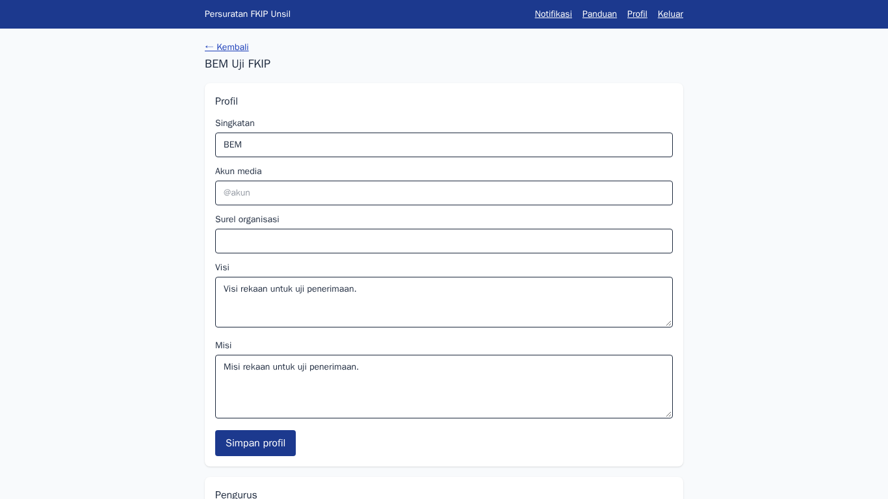
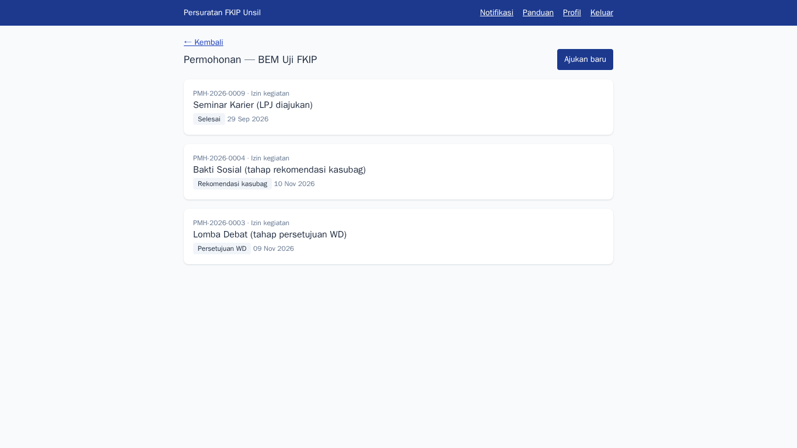
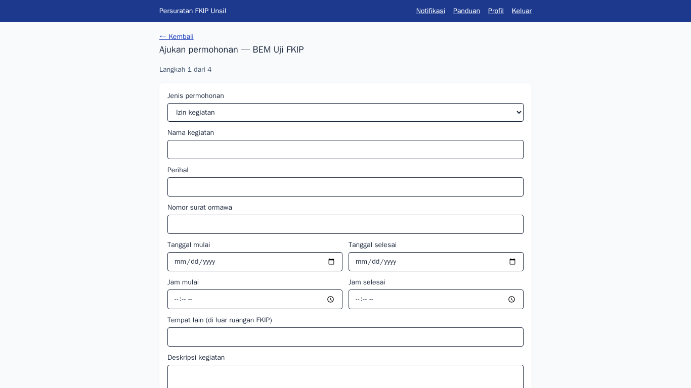
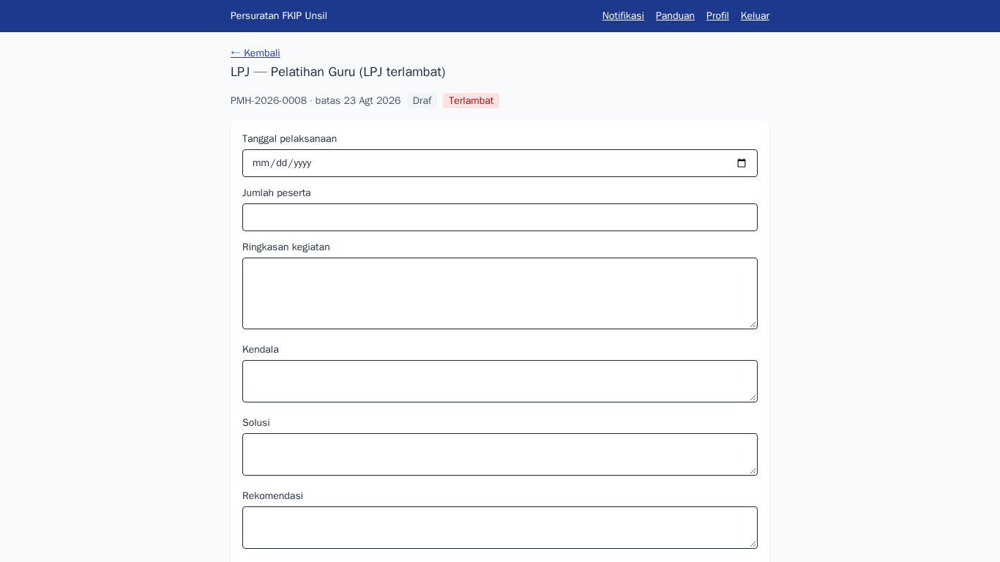
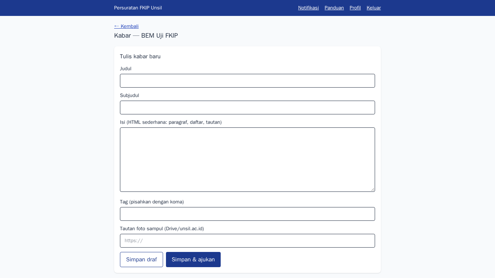
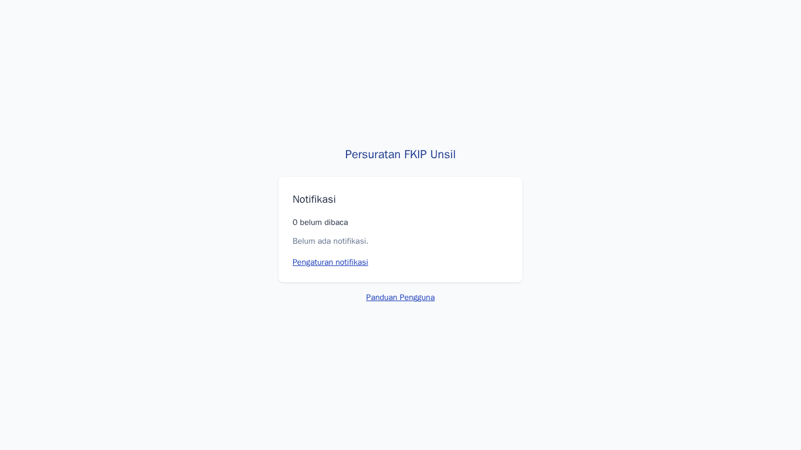
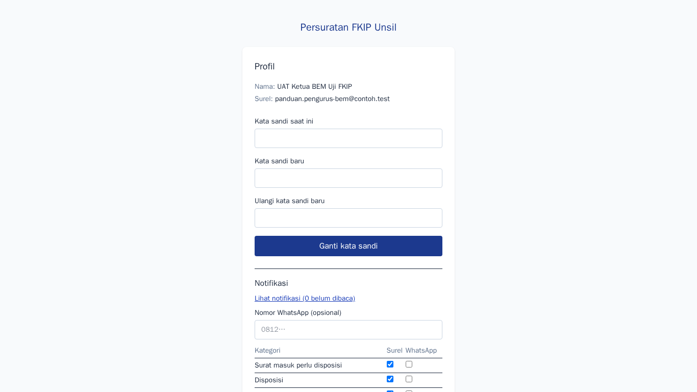

Pengurus ormawa
Tujuan
Mengajukan permohonan kegiatan dan ruangan, memantau progres, mengunduh surat izin, mengisi LPJ, mengelola profil, dan mengusulkan kabar untuk organisasi Anda.
Cara masuk
Daftar di halaman Daftar dengan surel …@student.unsil.ac.id, verifikasi surel, lalu minta ketua/sekretaris atau admin menautkan akun Anda ke ormawa (berdasarkan NIM). Masuk lewat halaman Masuk; akun bersama organisasi tidak ada.
Langkah-langkah
- Halaman masuk
Isi surel dan kata sandi pribadi. Lima percobaan gagal per menit akan dikunci sementara. Lupa kata sandi? Pakai tautan di bawah formulir.
Langkah 1 — Halaman masuk - Beranda ormawa
Ringkasan ormawa, SK dan periode, jumlah permohonan, LPJ jatuh tempo, serta tautan kabar. Bila Anda pengurus beberapa ormawa, pilih lewat tab di atas.
Langkah 2 — Beranda ormawa - Profil dan pengurus
Ketua dan sekretaris dapat mengubah singkatan, akun media, visi, misi, dan daftar pengurus. NIM dan telepon bersifat pribadi.
Langkah 3 — Profil dan pengurus - Memantau progres permohonan
Linimasa tiap permohonan: validasi admin, disposisi dekan, persetujuan WD, rekomendasi kasubag, hingga surat izin. Permohonan yang dikembalikan dapat diperbaiki dan diajukan ulang; yang sudah terbit menyediakan tombol Unduh surat izin.
Langkah 4 — Memantau progres permohonan - Mengajukan permohonan baru
Pilih jenis, isi data kegiatan dan penanggung jawab, pilih ruangan dan sesi (ketersediaan tampil langsung), lalu lampirkan tautan surat permohonan dan proposal. Aplikasi tidak menerima unggahan berkas.
Langkah 5 — Mengajukan permohonan baru - Mengisi LPJ
Setelah kegiatan selesai, isi tanggal pelaksanaan, peserta, ringkasan, kendala, solusi, dan tautan berkas LPJ, lalu Ajukan LPJ. LPJ yang terlambat (seperti contoh ini) dapat memblokir pengajuan permohonan baru sampai LPJ diajukan; setelah dinilai, nilai akhir dan catatan tampil di sini.
Langkah 6 — Mengisi LPJ - Mengusulkan kabar
Tulis judul, isi, tag, dan tautan foto sampul; Simpan draf atau Simpan & ajukan. Kabar tampil publik setelah disetujui admin; bila ditolak, catatan admin ditampilkan.
Langkah 7 — Mengusulkan kabar - Notifikasi
Setiap perpindahan tahap permohonan, penilaian LPJ, dan keputusan kabar tercatat di sini dan dikirim ke surel.
Langkah 8 — Notifikasi - Akun dan preferensi notifikasi
Atur kanal surel/WhatsApp per kategori, nomor WhatsApp opsional, dan ganti kata sandi.
Langkah 9 — Akun dan preferensi notifikasi
Tanya jawab
Saya tidak bisa mengajukan permohonan.
Pastikan SK kepengurusan ormawa masih berlaku, akun Anda sudah ditautkan, dan ormawa tidak diblokir karena LPJ terlambat.
Tautan berkas ditolak.
Gunakan satu berkas Google Drive atau unsil.ac.id (bukan folder, bukan pemendek URL seperti bit.ly) dan bagikan agar dapat dibuka.
Ruangan tampil terisi.
Pilih sesi lain. Sesi "seharian" bentrok dengan semua sesi pada hari yang sama.